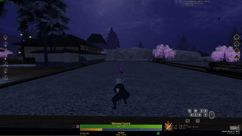
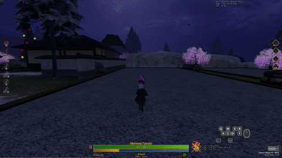
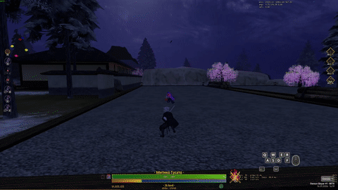
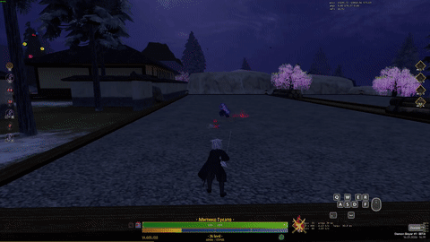
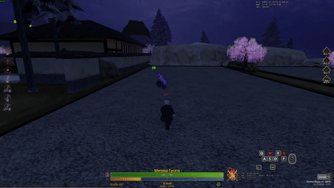
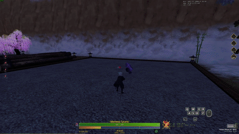

Каты дыхания Шинигами
Техники и формы боевого искусства
Формы дыхания Шинигами
E - Скоростной удар надвигающийся смерти

Shift+E - Последний полёт

F - Штурм

Shift+F - Пучина отчаянья

R - Похоронный разрез

Shift+R - Нечистотное облако (ката Ашерона)
